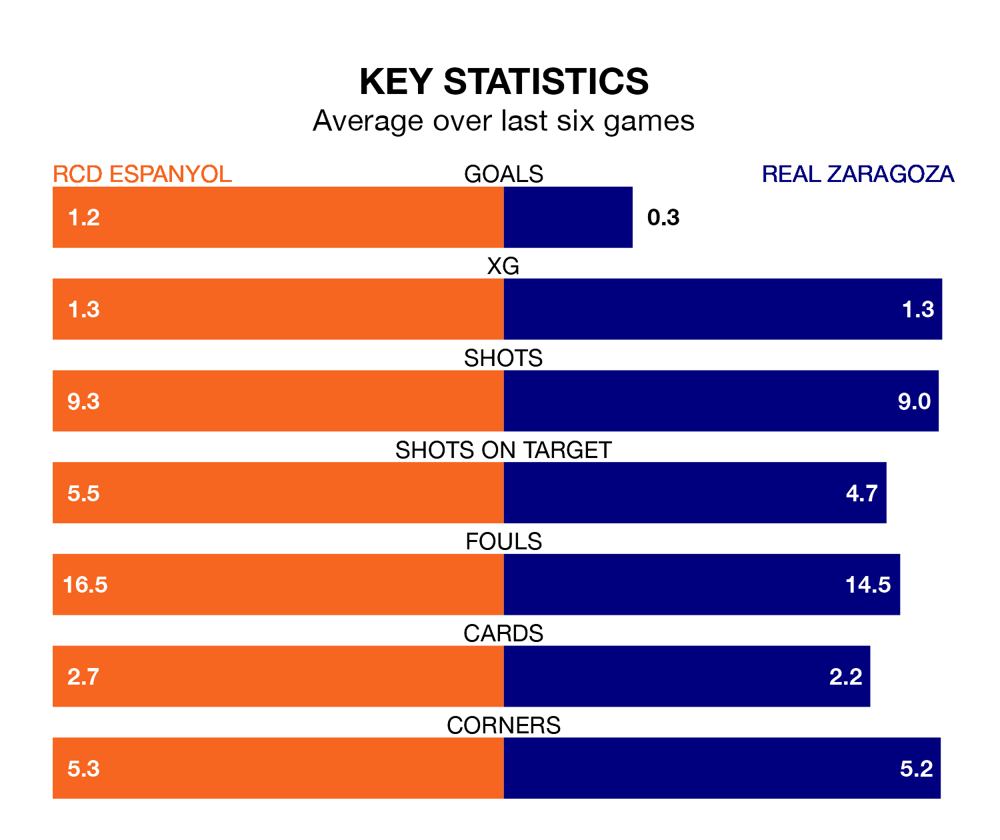

RCD Espanyol host Real Zaragoza in Friday's late match at the RCDE Stadium looking to bounce back from defeat last time out in the Segunda División.
RCD Espanyol, who sit fourth in the league after 18 games, fell to a 2-0 away defeat to Real Oviedo on December 1.
They face a Zaragoza side who picked up a win in their last match, a 1-0 victory against Leganés, and who sit 12th in the table.
With 29 goals in 18 games so far this season, Espanyol are the league's joint-second-highest scorers with 1.6 goals per game. And they are conceding fewer than average, letting in 19 goals at a rate of 1.1 per game.
Zaragoza, meanwhile, are below average scorers, with 0.9 goals per game, compared to a league average of 1.2. They have also conceded 0.9 goals per game.
In Javi Puado, RCD Espanyol have the league's sharpest shooter so far this season. He has notched nine goals in 14 appearances.
His goal rate of one every 128 minutes is much quicker than that of Maikel Mesa Piñero, Real Zaragoza's top scorer with a goal every 283 minutes, and a total of four goals in 17 games.
The home side are in mixed form in the Segunda División, with two wins and two draws from their last six games.
With a win and two draws over that period, the visitors' form is worse – they have taken five points from 18, compared to Espanyol's eight.
